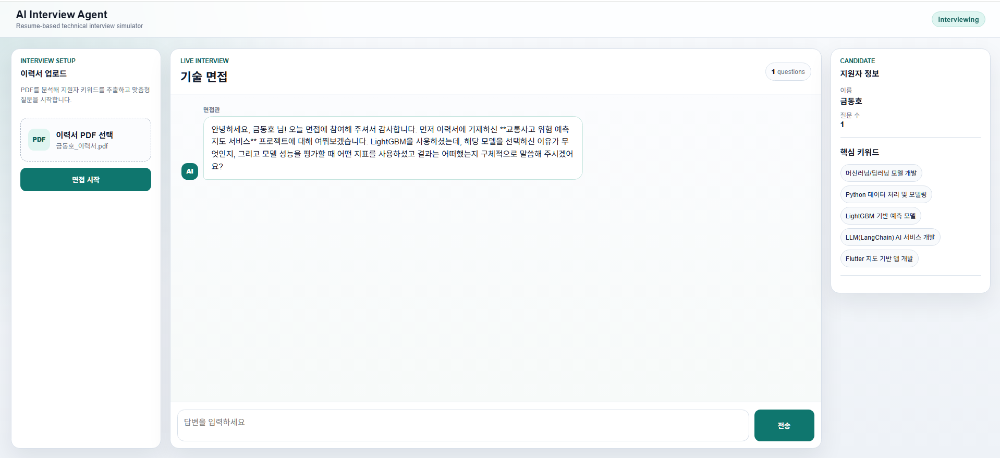
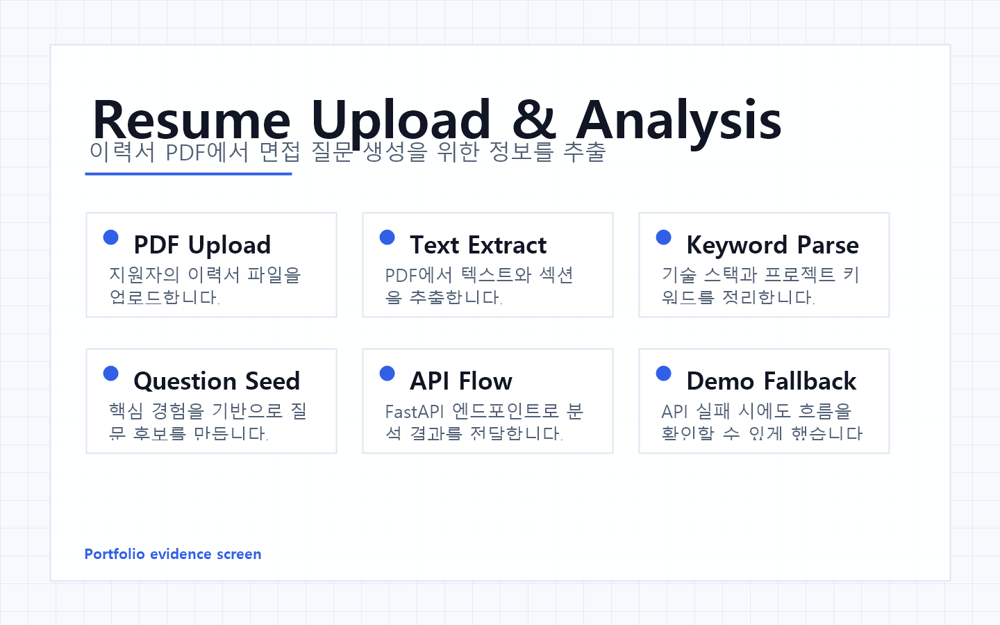
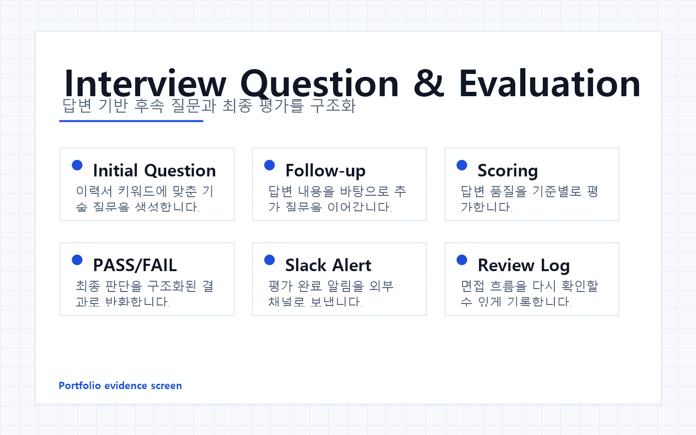

Overview
프로젝트 소개
지원자의 이력서 PDF를 업로드하면 텍스트를 추출하고, 핵심 기술 키워드에 맞춘 면접 질문과 후속 질문, 최종 평가를 생성합니다.
Project
이력서 PDF를 분석해 기술 면접 질문과 최종 평가를 생성하는 FastAPI 웹앱

Overview
지원자의 이력서 PDF를 업로드하면 텍스트를 추출하고, 핵심 기술 키워드에 맞춘 면접 질문과 후속 질문, 최종 평가를 생성합니다.
Problem
기술 면접은 지원자의 실제 경험과 기술 키워드에 맞춰 질문이 달라져야 합니다. 이력서 분석부터 질문 생성, 평가 알림까지 하나의 흐름으로 묶었습니다.
Flow
PDF 업로드 → 텍스트 추출 → 핵심 키워드 분석 → 면접 질문 생성 → 답변 기반 후속 질문 → 최종 평가와 Slack 알림
Troubleshooting
외부 LLM 또는 문서 파싱 API 호출이 실패하면 면접 화면 흐름이 끊길 수 있었습니다.
실제 API 응답에만 의존하면 데모와 테스트 환경에서 안정적인 화면 확인이 어렵습니다.
DEMO_FALLBACK 옵션을 두고 API 실패 시에도 임시 질문과 평가 결과로 흐름을 계속 확인할 수 있게 구성했습니다.
AI 서비스는 모델 응답뿐 아니라 실패 시 사용자가 어디까지 진행할 수 있는지도 서비스 품질에 포함됩니다.
Screens


Learning
문서 분석, LLM 질문 생성, 웹 UI, 외부 알림 API를 연결하면서 AI 기능을 실제 업무 흐름에 붙이는 구조를 경험했습니다.